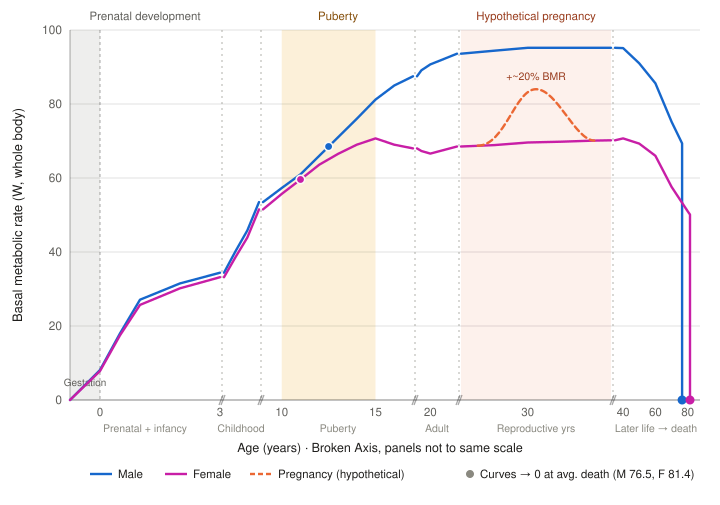

Whole-body basal metabolic rate from conception to the average age of death. The age axis is broken so that three short windows (gestation, puberty, and a hypothetical pregnancy) are expanded, while the slow stretches between them are compressed.

A whole life sits on one line, so the three stretches where metabolism changes fastest are pulled wide and the slow stretches are squeezed. The // marks are where the scale jumps. Height is the only thing that reads straight across the figure: points at the same height burn energy at the same rate. Left-to-right distances stop meaning anything once you cross a break.
| Before birth | The line begins at conception and reaches about 8 W at birth. Those nine months fill a whole panel; drawn to scale they would be a thread at the far left. |
|---|---|
| Childhood | Rate rises with body size, and the two lines run almost on top of each other. The small gap between them is body composition, not a real difference in how boys and girls burn energy. |
| Puberty | The lines split. Males keep climbing toward their peak; females level off near 15. The dots sit at the start of puberty, around 11 in girls and 12 to 13 in boys. |
| Adulthood | Males top out near 95 W, about 1,960 kcal a day, in their early thirties. Females settle near 70 W, about 1,450 kcal a day, and hold there from 30 to 50. |
| Pregnancy | The dashed line lifts about 20% above the female line by late pregnancy, then drops back after birth. |
| Later life | From about 60 the rate slides down as the body loses mass and cells slow. Each line stops at the average age of death. |
The curves come from published reference values, not from following one group of people across a lifetime, so the shape carries the lesson more than any single watt does. The straight drops to zero mark the average age of death, 76.5 for men and 81.4 for women in the US. Nobody's metabolism actually falls that way; the line just has to end somewhere.
The pregnancy rise is the one number that misleads. It is the extra energy of a heavier, pregnant body. Measured per kilogram it almost disappears: Pontzer and colleagues found no real change once the added tissue is accounted for. And every value here is resting metabolism, so a body that is moving, growing, or holding its temperature spends noticeably more.
Pontzer, H., Yamada, Y., Sagayama, H., Ainslie, P. N., Andersen, L. F., Anderson, L. J., Arab, L., Baddou, I., Bedu-Addo, K., Blaak, E. E., Blanc, S., Bonomi, A. G., Bouten, C. V. C., Bovet, P., Buchowski, M. S., Butte, N. F., Camps, S. G., Close, G. L., Cooper, J. A., … Speakman, J. R. (2021). Daily energy expenditure through the human life course. Science, 373(6556), 808–812. https://doi.org/10.1126/science.abe5017
Xu, J. Q., Murphy, S. L., Kochanek, K. D., & Arias, E. (2026). Mortality in the United States, 2024 (NCHS Data Brief No. 548). National Center for Health Statistics. https://doi.org/10.15620/cdc/174641